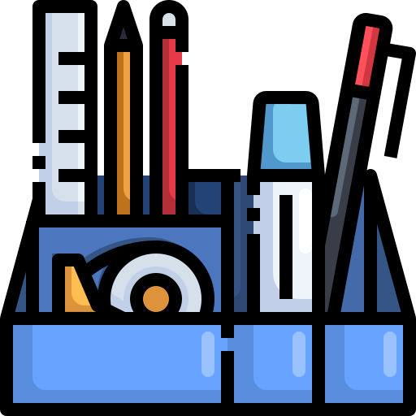
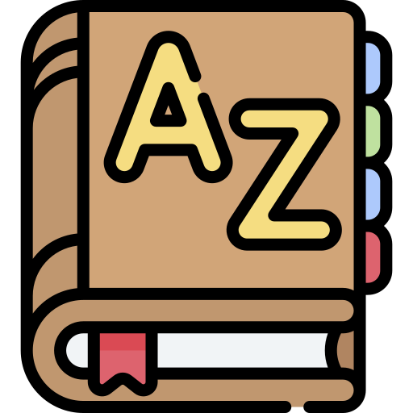
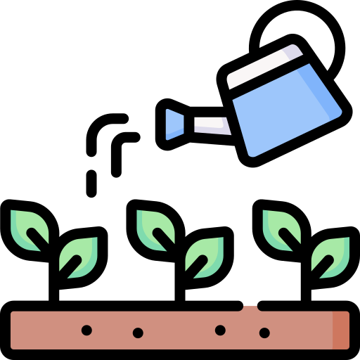
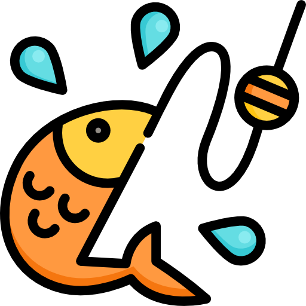
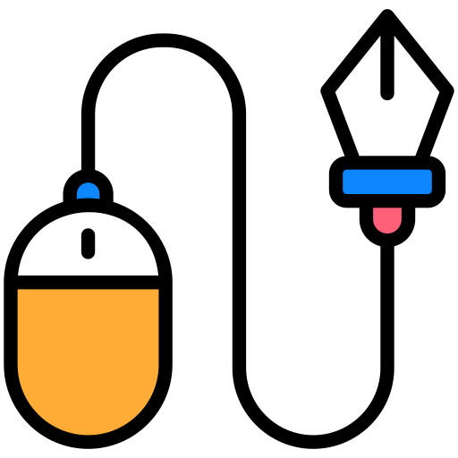
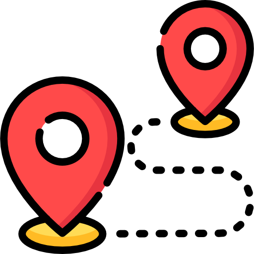

 Office |
Design |
Downloader |
English |
 Dictionary |
|||||
Jobs |
|||||||||
Shopping |
Cooking |
 Gardening |
 Fishing |
Music |
 常用 Recent
常用 Recent
办公工具 Office Tools
在线多人协同办公工具
Files Transfer
- Local Send: 局域网文件传输
- iCloud
- 微信文件传输助手网页版
下载工具 Downloader
- Revanced[Youtube Downloader]
- y2mate: YouTube Downloader.
- yt5s: YouTube Downloader.
- F-Droid[Forum]
- MP4转MP3 - 在线转换音频文件
- JDownloader: 还未细看功能
- apkpure：一个APK安装包下载网站
- mirrors.rit.edu
- 笨猫猫：浏览器插件
Remove Paywall
- Remove Paywall: 网页版免费，插件是收费的
- archive.today
检查网站是否在线

在线绘图工具 Online Graph- draw.io
- zenflowchart
- visual-paradigm
- Pictode：在线画板
- GraphOnline：在线画流程图
- twittershots：生成推文的截图
- NRD Studio：在线生成思维导图
- mind-map：在线生成思维导图

- markmap：在线生成思维导图
 设计工具 Design
设计工具 Design
- 爱给：微信表情包下载
- IAMPENTH: a website of penmanship;
- Lessons in Roundhand by Simon & Ritchie Group[PDF];
- Zanerians;
- dribbble.com;
- Audacity音频编辑器教程;
- PhotoMaker: 腾讯的一款图片编辑工具，网页版
 电子邮件 Email
电子邮件 Email
- Fake Email
- EmailDrop: free disposable email 已下线
打字练习 Typing
 二维码生成 QR Code
二维码生成 QR Code
Other Office Tools
- 繁体 转 简体
- 摄氏度/华氏度 转换
- SmallPDF: 免费 PDF 简单编辑工具
- 图片取色器/拾色器
- Internet FAQ Archives
- filehorse 旧版app安装包下载
- vavebg： 壁纸
-
港股财报繁体转简体方法：
- 用Adobe Acrobat Pro DC软件的“导出PDF”功能，转为Word格式；
- 用Word的繁简转换功能转为简体字；
- 从Word中打印出简体字的PDF文件；
-
用Calibra进行繁/简转换：
- 把文件加入到到 Calibre 的书库中；
- 右键点击该电子书，选择“转换书籍 -> 逐个转换”；
- 点击弹出窗口左侧的“查找与替换”；
- 在窗口的右侧操作区点击“加载”按钮，选取 .csr 文件；
- 在右上角选择转换后的文件格式，点击“确定”开始转换；
-
用Calibra进行繁/简转换 和 竖版/横版转换：
- 安装 Calibre 的 "Chinese Text Conversion" 插件，搜索 Chinese 即可，如图；
- 将书籍导入Calibra后，点击菜单栏“编辑书籍”功能；
- 在弹出的编辑页面上方的菜单栏，选择“插件”选项里的该插件；
- 在弹出的插件窗口（如图）中对转换的具体细节进行设置后即可进行转换；
{kind=link}
{kind=link}
* 如果繁体转简体成功，但排版还是竖版的话，需要继续编辑书，检查 css 文件，如果找到 vertical-rl 改为 horizontal-tb 即可。改完保存退出编辑模式，使用阅读预览效果；
* 网上搜索了很多资料说要修改代码（修改 opf 和 css 文件），实测最新版的『Chinese Text Conversion』插件已经不需要那么做了；
 英语学习 English Learning
英语学习 English Learning
- AnkiWeb：Ankidroid的web端
- rachelsenglish
- oaces: 免费学英语
词典 Dictionary
快乐生活 Happy Life
- DMV: Department of Motor Vehicles
- cityofrochester.gov
 音乐 Music
音乐 Music
- 铜钟音乐 [1]
- 网易云音乐
- soundstripe
- Cratedigg: 查找稀有歌曲和样本的163个好地方
- GoMusic: 音乐迁移助手，将网易云音乐、QQ 音乐的歌单，迁移至 Apple/Youtube/Spotify Music
- audiomack
- K-Lite Codec Pack
- 音乐家：马友友
- Audacity: 免费音频处理软件。
| 曲名 | 作者 | 备注 |
|---|---|---|
| 那年烟花 | 关剑 | |
| 假如我不再善良 | 郑畅业 | |
 购物 Shopping
购物 Shopping
- 北美省钱快报 Dealmoon
- StubHub: Buy sports, concert and theater tickets.
- Estate Sales
- Tractor Supply
-
- Rochester Public Market
- Marketview Liquor
 烹饪 Cooking
烹饪 Cooking
园艺 Gardening
钓鱼 Fishing

旅行 Journey行程攻略
租车
其他
- Making the Macintosh: Technology and Culture in Silicon Valley
- 向日葵儿童: 治疗儿童疾病的公益组织
- Quizlet: 学习帮手
- 3D植物: 在线的 3D 植物构建器，可以调节各种参数，生成一个 3D 模型
小技巧 Tips
IT 技巧
Windows 系统相关
Windows系统下操作相关
-
文件浏览器-导航-onedrive，隐藏
- 打开注册表编辑器：按 Win + R，输入 regedit，按回车。
- 定位到 OneDrive CLSID：输入或粘贴路径：HKEY_CLASSES_ROOT\CLSID{018D5C66-0C66-4086-8A3E-19C8376D3272} (注意，这可能是不同版本略有不同，或在 ...\Explorer\Desktop\NameSpace 找包含 OneDrive 条目)。
- 修改值：在右侧找到 System.IsPinnedToNameSpaceTree，双击将其值从 1 改为 0。
- 重启文件资源管理器：打开任务管理器 (Ctrl+Shift+Esc)，找到“Windows 资源管理器”，右键选择“重新启动”
-
在 Windows 10作系统和所有应用程序中禁用 OneDrive。
- 按键盘上的 Win + R 以打开“运行”对话框。
- 键入 gpedit.msc ，然后按 Enter 或 OK 以打开本地组策略编辑器。
- 转到 本地计算机策略->计算机配置 ->管理模板 ->Windows 组件 ->OneDrive。
- 在右窗格中，双击名为 “阻止将 OneDrive 用于文件存储”的策略。
- 选择 Enabled单选按钮。
- 完成后，单击确定。
- 无法从 OneDrive 应用程序和文件选取器访问 OneDrive。
- Windows 应用商店应用程序无法使用 WinRT API 访问 OneDrive。
- OneDrive 未显示在文件资源管理器的导航窗格中。
- OneDrive 文件不会与云保持同步。
- 无法自动从相机胶卷文件夹上传照片和视频。
以下是有关如何在 Windows 10作系统和所有应用程序中禁用 OneDrive 的步骤。
OneDrive 图标在资源管理器中隐藏，OneDrive 应用程序被禁用并阻止运行。阻止从任何桌面应用程序或现代应用程序访问或处理 OneDrive 上的文件。例如：
注销然后再次登录或重新启动计算机。
-
Window下将多张图片转为一个PDF文件方法：
- 在文件夹中全选所有图片；
- 在第一张图片上单击鼠标右键，选“打印”。注意这里要在第一张图片上单击右键，否则打印时图片的排列顺序可能有问题；
- 在弹出的窗口中对打印文件的参数进行设置；
- 打印得到PDF文件
-
多个PDF合并为一个PDF文件：用Adobe Acrobat软件。
-
强制隐藏 window taskbar 任务栏：
- 安装 hide taskbar 软件
- 设置快捷键为 Win 键
-
Windows复制弹窗内容 原文链接：
- 单击错误弹窗；
- Ctrl+C 复制，此时系统不会有反馈信息，但其实已经进行了复制；
- 随便粘贴，会得到排版整齐的详实信息
Youtube
- 只要删除已有的观看历史记录，并且关闭历史记录，就可以得到一个干净的首页，没有任何推荐视频。
电子书格式
- epub：通用电子书格式；
- azw/mobi：azw是新版本的mobi格式。Kindle不支持epub；